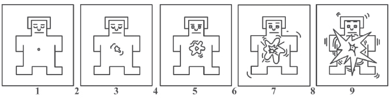
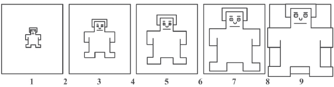

Valence: The dimension of valence is the negative-positive valence of emotionand ranges from unpleasant to pleasant (unhappy-happy) as shown in the following manikins.

Note: The psychophysiological scales are shown in this page. Please read carefully about these scales to get intuition about them. You will be registering your response on these scales.
Valence: The dimension of valence is the negative-positive valence of emotionand ranges from unpleasant to pleasant (unhappy-happy) as shown in the following manikins.
Arousal: Physiological arousal is the activation state of emotion, which ranges from inactive to active state as shown in the following manikins..

Dominance: A person's feeling of dominance in a situation is based on the extent to which he feels unrestricted or free to act in a variey of ways as shown in the following manikins. For example, imagine yourself sweating in the exam hall due to unpreparedness. On the contrary, you are well prepared for the exam.

Liking: How much do you like the video in the scale of 1 to 5? For example, people may have test for romantic videos more than sad videos.
Familiarity: Are you familiar with the content of the video? Rate on the scale of 1 to 5 based on your prediction of the next event in stimulus video you are looking at. For example, scene of someone is running and you are able to predict what could be next event in the video.
Relevance: Is there any past life event which is resembling with the situation in the stimulus video? For example, in the movie “slumdog millionaire” the actor was able to relate the context with his past life.
Emotion: Based on the selected valence and arousal participants will be shown list of emotion. If you are unable to judge an atomic feeling, you can write the combination of emotions by selecting the option “No Emotion from the List”. Type emotion name with ‘first/second/third’ in bracket. First, second and third are aliasing 0-20s, 20-40s, and 40-60s respectively. For example, emotion1(first), emotion2(second), emotion3(third)